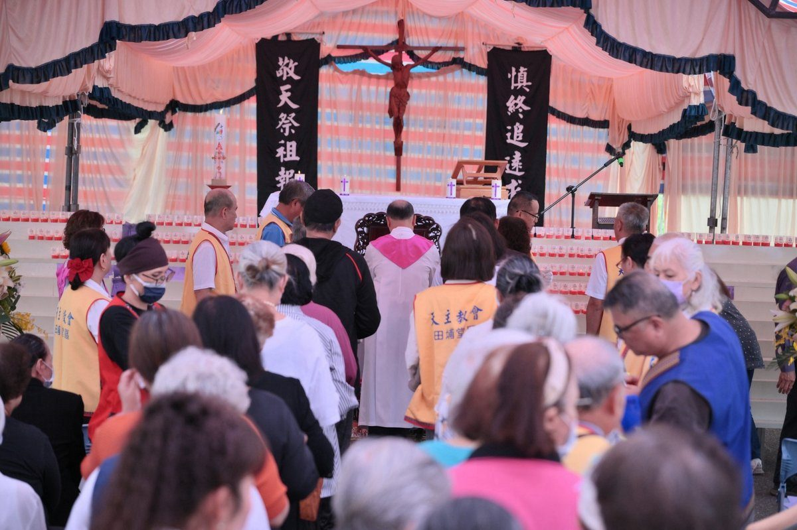

吉安鄉公所攜教會辦煉靈月追思彌撒 三百人緬懷先祖傳孝道

可樂電子報小編/編輯
吉安鄉公所與吉安鄉民代表會為弘揚慎終追遠的傳統美德，深化多元宗教文化交流與生命關懷，攜手教會於14日上午在慈雲山懷恩堂前廣場共同舉辦115年度「天主教會慎終追遠暨煉靈月追思彌撒」。今年活動邁入第21年，吸引逾300位教友、慕道者及地方鄉親參與，合計奉獻212戶、追思1,172位已故先人。鄉長游淑貞也親自到場，與大家一同緬懷先祖，傳遞思念與祝福。

此次追思彌撒活動由天主教會花蓮教區田埔牧靈委員會承辦，並結合田埔、慶豐、太昌、南華及小臺東等堂區共同協辦。在花蓮教區田埔天主堂主任司鐸田力強神父主祭，以及瑞穗天主堂主任司鐸吳清風神父及壽豐天主堂主任司鐸金永民神父陪同共祭下，全場信眾依序入席、虔誠祈福，場面莊嚴隆重。

活動首先透過「導引光明」煉靈點燈儀式，以一盞盞燭光象徵祈禱與思念，祈願亡者靈魂安息、歸向天主；隨後進行慎終追遠敬天祭祖彌撒，依循天主教禮儀進行讀經、福音講道、感恩祭獻及領聖體等儀式，帶領現場教友齊唱聖歌、誦念祈禱文，為已故親友獻上祝福。接續舉行教會公祭及一般公祭，讓不同信仰背景的民眾都能透過各自方式表達追思，現場氣氛莊嚴祥和、溫馨感人。

游淑貞表示，每年11月是天主教會的「煉靈月」，教會透過祈禱、奉獻彌撒及愛德實踐，為已故親友祈福，展現對生命的尊重與永恆思念。無論宗教信仰如何不同，慎終追遠、飲水思源都是共同珍視的文化價值，也與天主教十誡中「孝敬父母」的精神相互呼應。她也感謝教友與鄉親年年回到慈雲山團聚，讓思念成為凝聚地方情感的力量。她也感謝教友與鄉親年年回到慈雲山團聚，讓思念成為凝聚地方情感的力量。
慈雲山園區不僅是先人安息之所，更承載著無數家庭珍貴的生命記憶，透過每年舉辦追思彌撒，讓信仰與在地敬祖文化相互交融。鄉公所感謝教會團體與各協辦單位長期投入，讓這項活動成為凝聚地方情感、促進宗教交流的重要平臺。未來也將持續推動多元宗教文化交流與公共人文關懷，打造共融友善的生活環境，讓不同信仰彼此尊重，將思念化為祝福，使愛與感恩跨越世代，在吉安持續傳承。

📸 更多現場紀實影像


🌟 掌握花蓮在地第一手資訊・歡迎訂閱追蹤
深度紀實報導、在地精采影音專題，第一時間接收最新消息！